Design Page
Introduction
My idea for this website is to make a sleek, simple looking and modern design influenced from modern graphic designers portfolios and websites. For this website I want to aim to make the navigation easy to use and have more cheerful content but a serious feel.
Site map
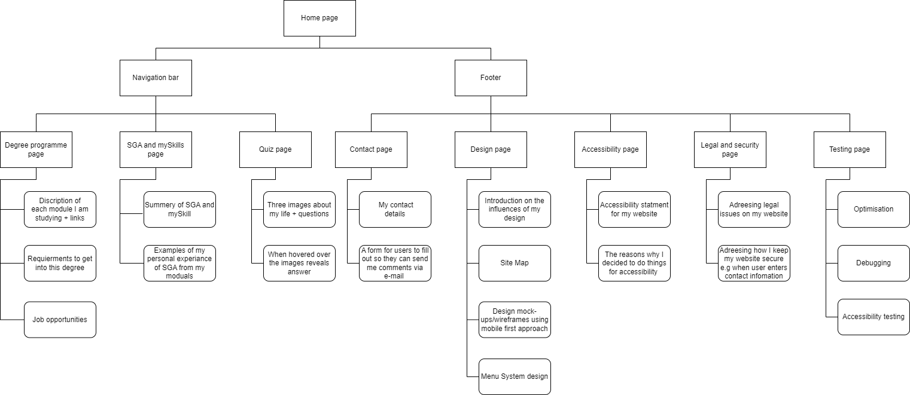Design mock-ups: Wireframes
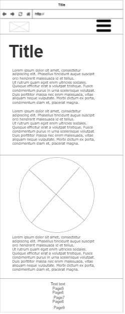 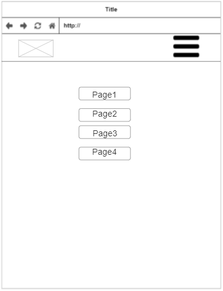 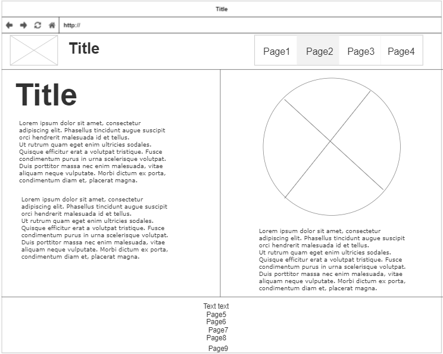Home page Wireframes, I chose to split the page in two with a border so that the content spans across the whole page. At the breakpoint of around 800 or 900px the content will move inline (this is becasue around this point there is a lot of unused space on the right). In the top left corner there will be a pixel art of me then when hovered over will change, this will be on every page.
Menu System: For the nav bar it will have 3 lines in the corner for phones and when pressed it will move the page options over on top. This is because on a phone the having the nav displayed in the corner would clutter the screen. Then after the breakpoint 800 or 900px the nav will be in the top right.
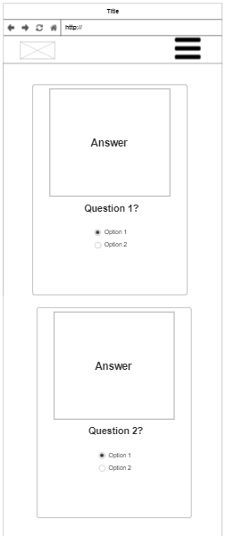 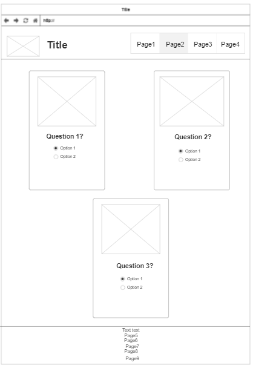 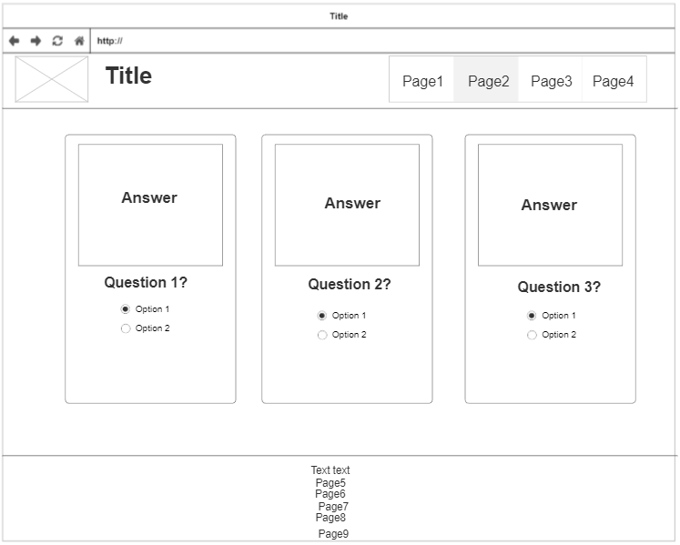Quiz page Wireframes, I will have 3 boxes that use "display: flex;" and "flex-wrap: wrap;" so that when the screen is large they line up horizontally and when small screen they will be on top of one another this utilises all the screen space. When hovering over the images it will display the answer and the user can use the radio buttons to select an answer.
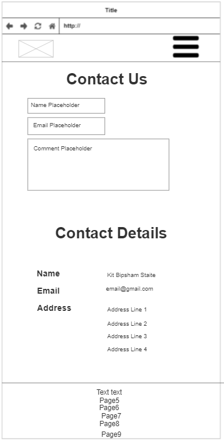 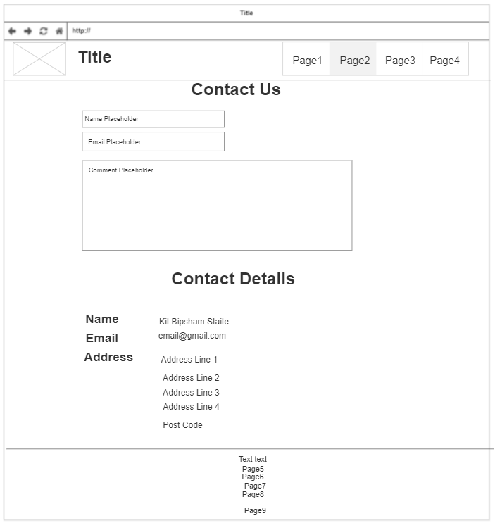Contact page Wireframes, for smaller screens the margin will will smaller and for larger it will be bigger the text box widths will also be smaller. Inside the text boxes there will be placeholders for to add a name, email and comment.
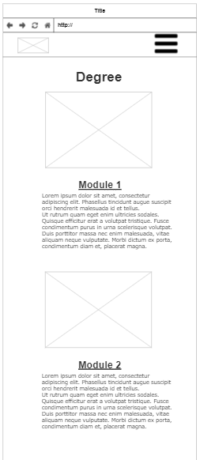 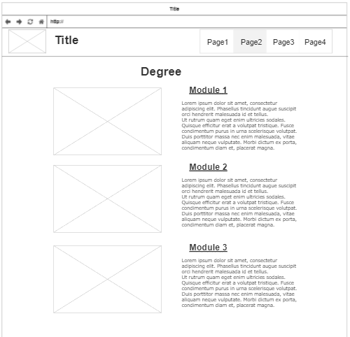Degree page Wireframes, for larger screens the image and info will be displayed side by side and for smaller screens it will be in-line this makes it easier to read for both screen sizes.
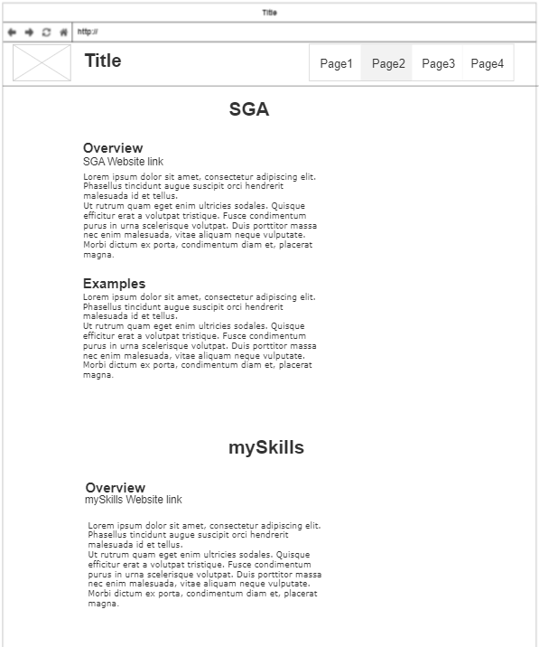The SGA and mySkills is similar to design, testing, accessibility and legal and security pages. The page on smaller screens is similar just with no margins and the text will wrap.
Logo Design
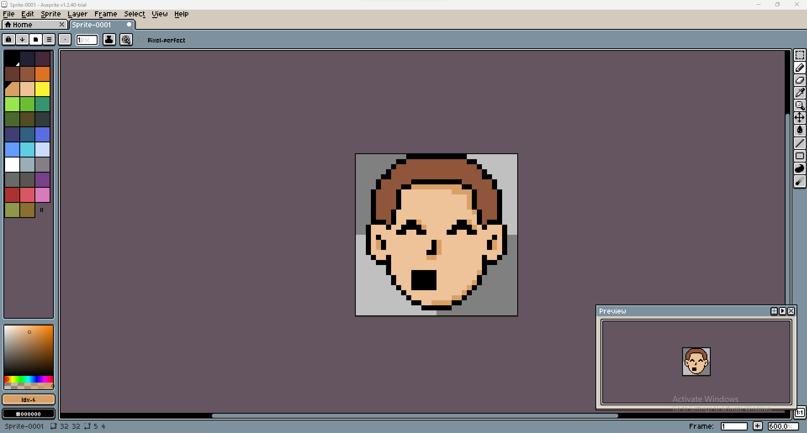 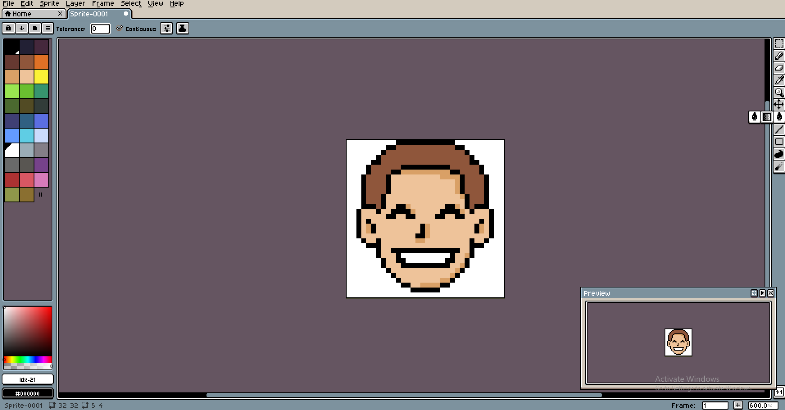I used Aseprite free trial to create two pixel faces. One smile that will be the default and will also be used as the tab icon and an O face that will be revealed when the user hovers over the icon in the top right.